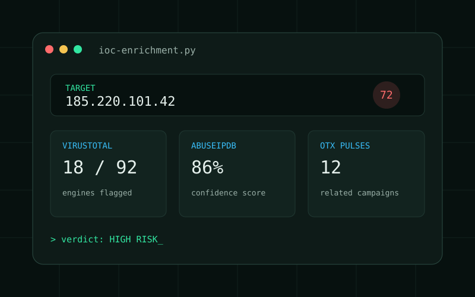
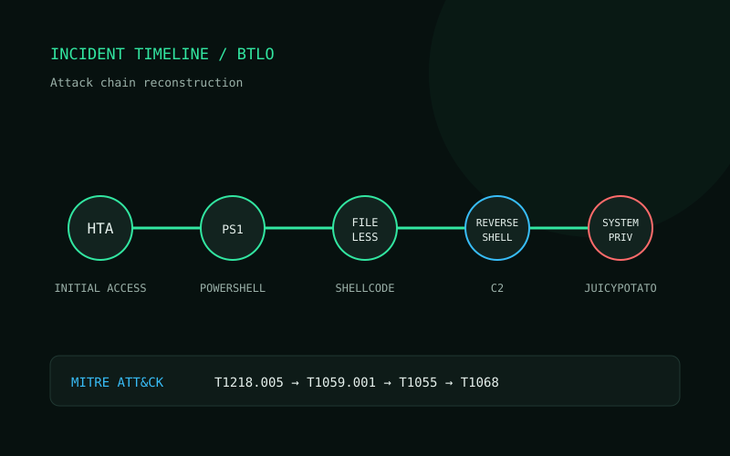
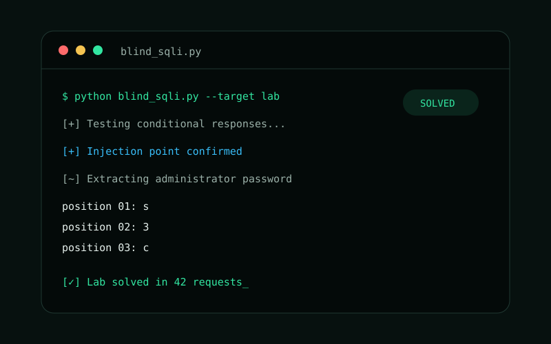
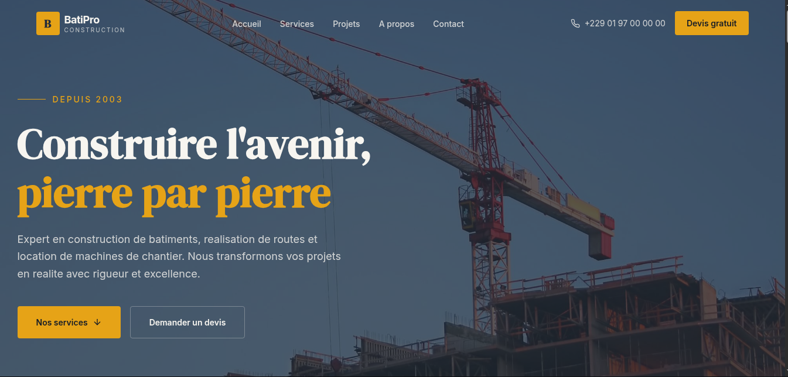
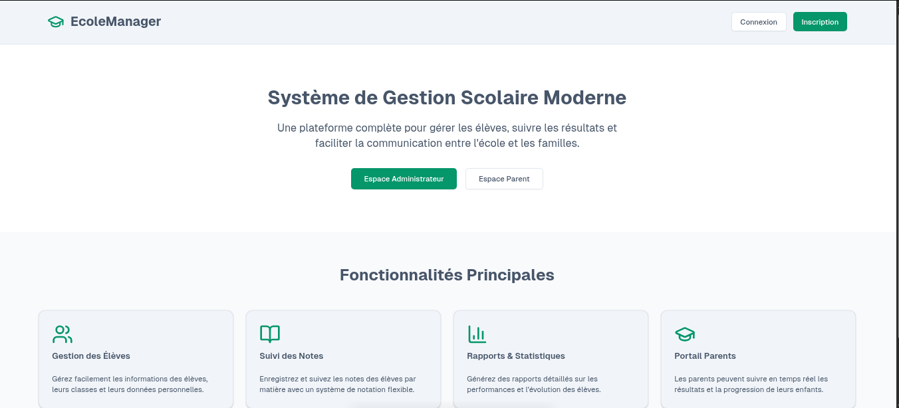
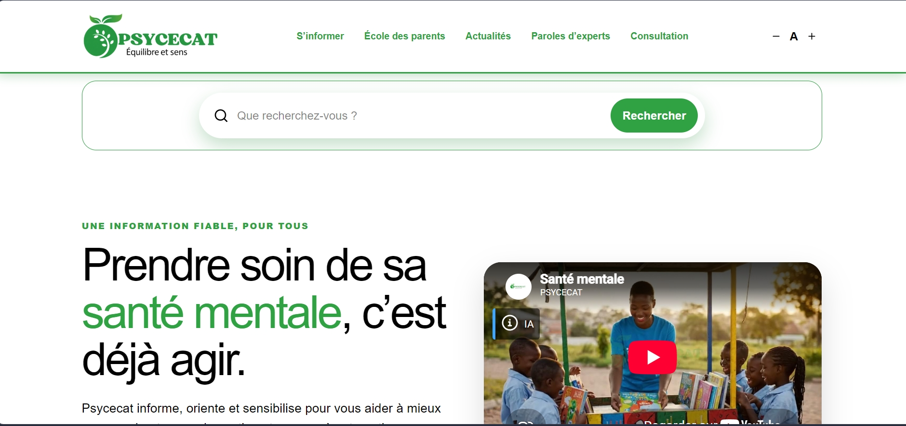
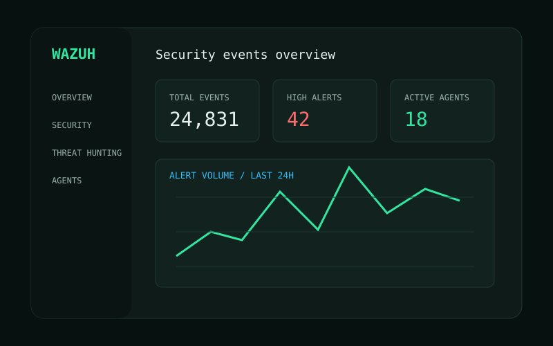

Basé à Cotonou, Bénin
Bonjour, je suis Pascal HOUNGUE. Développeur web & Analyste de sécurité | Blue Team & SOC Analyst
Passionné par la défense des systèmes, l’analyse d’incidents, je transforme les signaux techniques en décisions concrètes pour mieux comprendre, détecter et contrer les menaces.
01 / À propos
Comprendre l’attaque pour mieux défendre.
Titulaire d’une licence en informatique, je me spécialise en cybersécurité défensive avec l’objectif d’évoluer au sein d’un SOC.
De mai à août 2026, j’ai effectué un stage de trois mois à la DSI/SSI du Port Autonome de Cotonou, encadré par un analyste cybersécurité. Cette immersion m’a permis de contribuer à l’analyse d’incidents réels et de courriels suspects, notamment avec VirusTotal et DidierStevensSuite.
En parallèle, je développe des sites web freelance avec Next.js et WordPress headless. Cette double compétence sécurité-développement nourrit mon intérêt pour l’entrepreneuriat et les marchés technologiques africains.
- Formation
- Licence en informatique
- Spécialisation
- Blue Team / SOC / Défense
- Objectif actuel
- Intégrer un SOC en tant que Blue Teamer
02 / Compétences
Une boîte à outils orientée détection et investigation.
Des fondamentaux réseau à l’analyse forensique, avec une pratique régulière sur des laboratoires dédiés.
Outils
Threat Intelligence
Développement
Concepts
Labs & langues
03 / Certifications
Apprentissage continu, acquis vérifiables.
IBM
Operating Systems: Overview, Admin & Security
Credential ID : 5BTKKS0YOJC7
IBM
Cybersecurity Tools & Cyberattacks
Credential ID : LRHPMJ7206H4
IBM
Introduction to Cybersecurity Careers
Credential ID : NDYUBCPOAEE7
Yonsei University
IoT Wireless & Cloud Computing
Credential ID : NIH19B8EZHF8
04 / Projets
De la théorie à des cas d’usage concrets.
Investigations, automatisations et produits web conçus pour apprendre, documenter et résoudre des problèmes réels.

Threat Intelligence · Python
Analyse de réputation IP et domaine
Script d’enrichissement d’IOC qui agrège VirusTotal, AbuseIPDB et AlienVault OTX pour produire une synthèse exploitable.
- Python
- REST API
- JSON
- OSINT

Blue Team · Forensics
Reconstitution d’une chaîne d’attaque
Rapport BTLO retraçant une compromission de HTA à un reverse shell, puis une escalade JuicyPotato et un bypass UAC.
- EVTX
- PowerShell
- MITRE ATT&CK

Développement web · Headless
GlobExplore
Site performant combinant une interface Next.js et un back-office WordPress headless, déployé sur Vercel.
- Next.js
- WordPress
- Vercel

Développement web
BatiPro Construction
Site performant combinant html, css, js et php natif
- HTML
- CSS
- PHP

Développement web
EcoleManager
Site performant à l'aide du next.js et de base de données mysql
- Next.js
- Base de données MySQL

Développement web · SEO
Psycecat
Site headless avec formulaires personnalisés, optimisation SEO et génération dynamique du sitemap.
- Next.js
- WordPress
- SEO

SOC Lab · SIEM
Plateforme Wazuh virtualisée
Déploiement d’un environnement SIEM pour centraliser les événements, expérimenter les règles de détection et suivre les alertes.
- Wazuh
- Virtualisation
- Sysmon
05 / Parcours
Une progression guidée par la pratique.
-
Fondations
Licence en informatique
Acquisition des fondamentaux en développement, systèmes, réseaux et bases de données.
-
11 mai — 10 août 2026
Stage DSI/SSI · Port Autonome de Cotonou
Immersion de trois mois en analyse d’incidents et investigation de courriels suspects, sous l’encadrement d’un analyste cybersécurité.
-
2026
Certifications IBM & Coursera
Consolidation des connaissances en systèmes d’exploitation, outils de cybersécurité, cyberattaques et cloud computing.
-
Objectif · 16–17 novembre 2026
Préparation HackerLab 2026
Entraînement CTF multidisciplinaire pour la finale organisée par ASIN-Bénin à Cotonou.
06 / Contact
Construisons quelque chose de sécurisé et innovant.
Une opportunité, une collaboration ou simplement envie d’échanger autour de la cybersécurité d'un projet web ? Écrivez-moi.